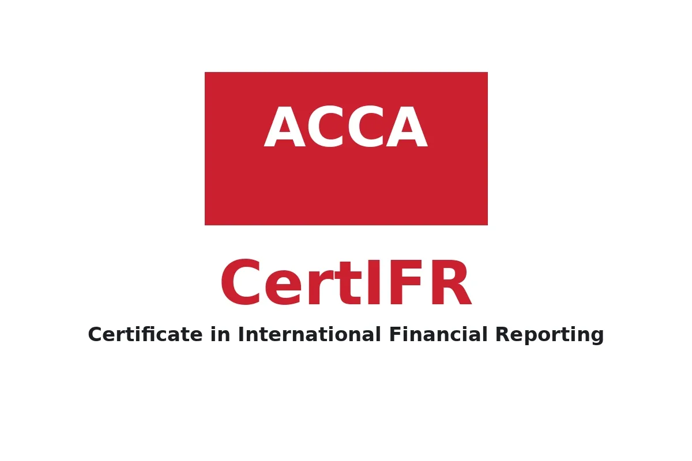
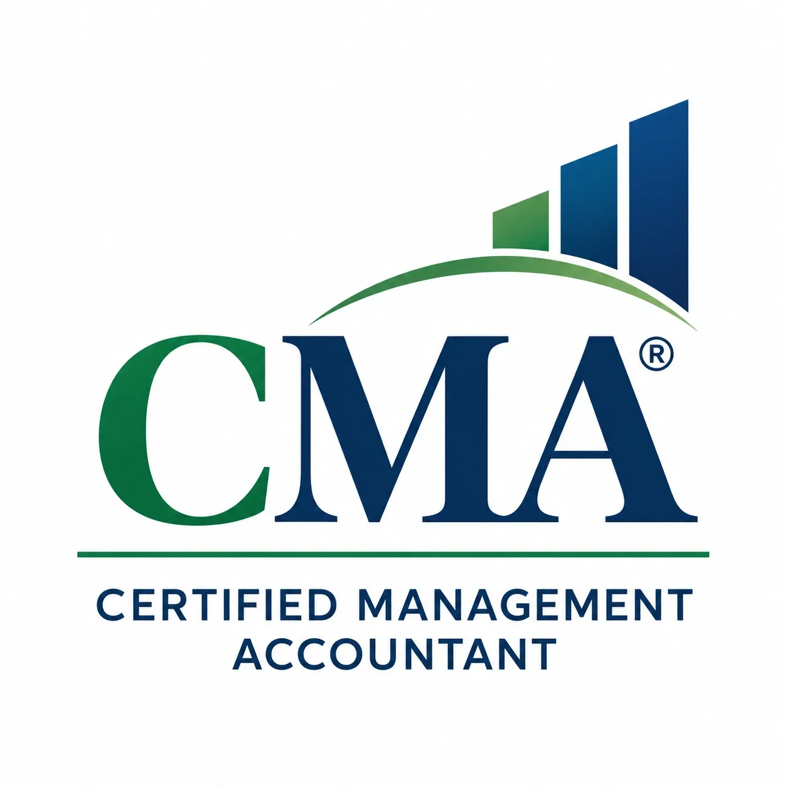
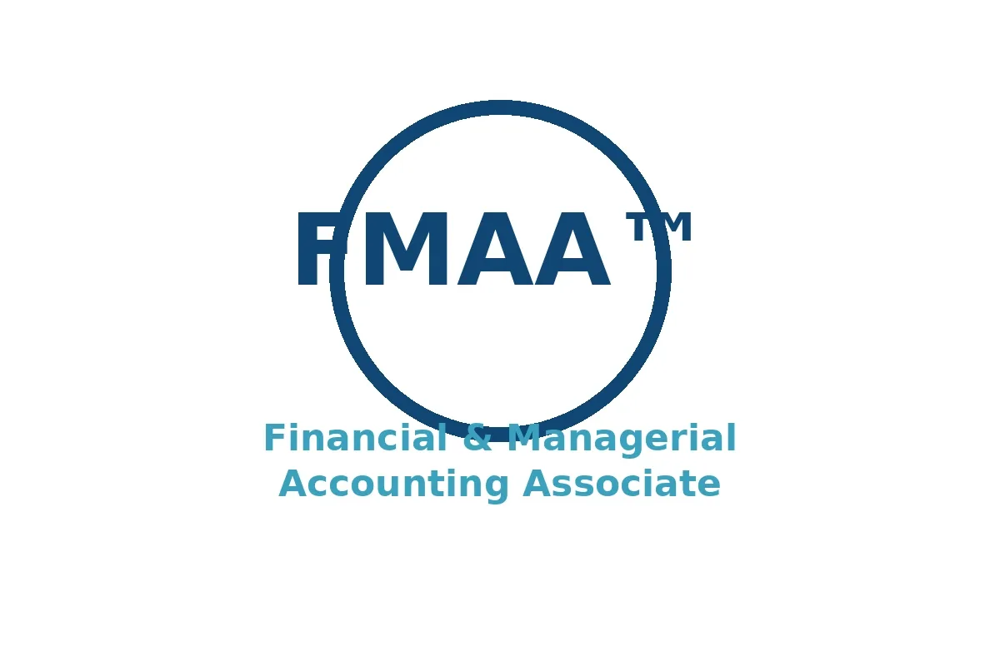

حضوري في الرياض
- المدة: 4 أسابيع
- في مقر معهد مسارتك بالرياض
لا توجد دفعة حضورية مفتوحة حاليًاسجّل في قائمة الانتظار ونبلغك أول ما تُفتح دفعة جديدة.
رسوم الدورة شامل الضريبة1,000
استعد لاختبار CPA الأمريكي مع مسارتك عبر AUD وFAR وREG واختيار BAR أو ISC أو TCP، مع فهم شروط الولاية والأهلية قبل التسجيل.
دورة CPA برنامج تدريبي من معهد مسارتك للتدريب في الرياض. استعد لاختبار CPA الأمريكي مع مسارتك عبر AUD وFAR وREG واختيار BAR أو ISC أو TCP، مع فهم شروط الولاية والأهلية قبل التسجيل. تُقدَّم الدورة حضوريًا في الرياض أو أونلاين مباشر، ومدتها 4 أسابيع، ورسومها تبدأ من 1,000 ريال شامل الضريبة.
آخر تحديث للمعلومات:
حضوري في مقر منشأتك أو في معهد مسارتك أو أونلاين، بمواعيد تناسب فريقك.
الأهداف، ولمن تناسب، والاختبار والشهادة، في مكان واحد.
دورة CPA من معهد مسارتك بالرياض تساعد المحاسبين والماليين على الاستعداد لاختبار المحاسب القانوني المعتمد الأمريكي، وفهم أقسام FAR وAUD وREG واختيار BAR أو ISC أو TCP، مع توضيح تقييم المؤهلات والولاية المناسبة وإجراءات NTS والاختبار الدولي داخل السعودية.
تأهيل لاختبار المحاسب القانوني الأمريكي
CPA اختصار لـ Certified Public Accountant. وهي رخصة مهنية أمريكية تصدرها مجالس المحاسبة المختصة، وليست شهادة اتحادية واحدة. ويتكون الطريق عادة من أربعة عناصر: التعليم، الاختبار، الخبرة، وقد توجد متطلبات أخلاقية إضافية حسب الولاية.
Education – التعليم
درجة جامعية وساعات محاسبة وأعمال وفق قواعد الولاية المختارة وتقييم المؤهل الدولي.
Exam – الاختبار
النجاح في أقسام Uniform CPA Examination الأربعة خلال مدة صلاحية الرصيد التي تحددها الولاية.
Experience – الخبرة
خبرة مهنية مؤهلة وتوثيقها وفق نوع العمل والمشرف والمدة المطلوبة في الولاية.
Ethics – الأخلاقيات
بعض الولايات تطلب اختبارًا أو مقررًا أخلاقيًا مستقلًا قبل إصدار الرخصة.
النجاح في اختبار CPA أو الحصول على رخصة أمريكية لا يمنح تلقائيًا ترخيص مزاولة المحاسبة والمراجعة أو توقيع تقارير التدقيق داخل المملكة؛ الترخيص المحلي له متطلبات مستقلة لدى الجهات السعودية المختصة.
لا توجد Discipline أفضل للجميع. الاختيار الأقوى هو الأقرب إلى دراستك وخبرتك والمجال الذي تستطيع تطبيقه وحل محاكاته بثقة.
BAR
يناسب من لديه أساس قوي في FAR، التقارير المتقدمة، التحليل المالي، البيانات أو المحاسبة الحكومية.
قد يناسب: Financial Reporting، FP&A، Advisory.
ISC
يركز على تدقيق تقنية المعلومات، الضوابط، SOC، الأمن، الخصوصية، توافر الأنظمة وسلامة المعالجة.
قد يناسب: IT Audit، Internal Audit، Risk، GRC.
TCP
يناسب من لديه خبرة أو اهتمام قوي بالضرائب الأمريكية والتخطيط الضريبي والمعاملات المتقدمة.
قد يناسب: Tax، Compliance، Advisory.
اجتياز BAR أو ISC أو TCP يؤدي إلى نفس Uniform CPA Exam؛ اسم القسم المختار لا يحصر نطاق عملك المهني مستقبلًا.
متطلبات دخول الاختبار والترخيص ليست موحدة. قد تختلف الولاية في الدرجة العلمية، مجموع الساعات، ساعات المحاسبة والأعمال، الإقامة، الخبرة، الأخلاقيات، مدة صلاحية الرصيد وطريقة تقييم المؤهل الأجنبي.
المؤهل الجامعي
نوع الدرجة والتخصص والجامعة ومدى معادلة المؤهل في النظام الأمريكي.
الساعات الأكاديمية
إجمالي الساعات وتوزيع مقررات المحاسبة والأعمال ومستواها.
تقييم الشهادات
المتقدم الدولي يحتاج عادة إلى تقييم تعليمي مقبول لدى الولاية المختارة.
الخبرة
المدة ونوع العمل وطريقة التحقق وصفة المشرف تختلف حسب الولاية.
الأخلاقيات
قد تطلب الولاية اختبار أخلاقيات أو مقررًا أو مستندات إضافية.
صلاحية الرصيد
الفترة المتاحة لإكمال الأقسام الأربعة يحددها مجلس الولاية.
لا. مسارات الترخيص تتطور، وبعض الولايات بدأت أو تدرس مسارات بكالوريوس مع خبرة أطول بجانب مسار 150 ساعة. التطبيق يختلف حسب الولاية، لذلك يجب مراجعة القواعد السارية وقت التقديم.
تحقق من المتطلبات الرسمية عبر NASBA CPA Exam ومسارات الترخيص.
خطة تبدأ من الأهلية
ترتيب الدراسة بعد فهم المؤهل والولاية والأقسام، لا تقديم برنامج موحد للجميع.
شرح المفهوم والتطبيق
توضيح عربي للمفاهيم مع الحفاظ على المصطلحات والأسئلة باللغة الإنجليزية.
تدريب على TBS
العمل على المرفقات والسيناريوهات والجداول وتحليل المستندات، وليس MCQs فقط.
إدارة وقت الاختبار
استراتيجية لتوزيع الوقت بين Testlets وحماية وقت المحاكاة.
قياس تقدم مرحلي
اختبارات ومراجعات تكشف الفجوات قبل حجز موعد القسم.
حضوري أو أونلاين مباشر
طريقة التدريب والدفعات تحدد حسب القسم والخطة والجدول المتاح.
لا يمكن ضمان النجاح أو قبول المؤهل أو إصدار الرخصة. دور التدريب هو تحسين المعرفة وتقنية الحل والاستعداد، بينما الأهلية والنتيجة والترخيص تخضع للجهات الرسمية.
CPA
ACCA
CMA
لا توجد شهادة أقوى بصورة مطلقة؛ توجد شهادة أقرب للوظيفة والسوق والنظام المهني الذي تستهدفه.
روابط داخلية مرتبة حسب البدائل والمهارات المساندة لمسار CPA.
دورة ACCA بديل دولي واسع في المحاسبة والتقارير والتدقيق والتمويل. عرض الدورة دورة CMA المحاسبة الإدارية والتخطيط والأداء والتكاليف والقرارات. عرض الدورة المحاسبة المتقدمة القوائم الموحدة والمعالجات المعقدة والتحليل المحاسبي. عرض الدورة دورة GRCP الحوكمة والمخاطر والامتثال لمسارات التدقيق والرقابة. عرض الدورة تحليل البيانات باستخدام Excel رفع كفاءة التحليل والجداول والتقارير المالية. عرض الدورة جدول التدريب راجع الدفعات والمواعيد واختر طريقة التدريب المناسبة. عرض الجدول
لا يوجد سعر أو مدة واحدة عادلة لجميع المتدربين؛ فالطالب الذي يحتاج FAR فقط يختلف عن طالب يحتاج المسار الكامل، كما تختلف الخطة حسب الخلفية وDiscipline المختارة وطريقة التدريب.
حسب القسم لا تدفع مقابل محتوى لا تحتاجه
أرسل تخصصك وجامعتك وسنة التخرج وكشف الساعات إن توفر والخبرة الحالية. يساعدك فريق مسارتك على بناء تصور أولي للخطة التدريبية والأسئلة التي يجب حسمها رسميًا.
طريق CPA الصحيح يبدأ باختيار الولاية وتقييم المؤهل، ثم دراسة الأقسام بترتيب يناسبك واختيار Discipline مبنية على خبرتك. الصفحة والدورة لا تخلطان بين التدريب والاختبار والترخيص.
دورة CPA CPA السعودية CPA الرياض المحاسب القانوني الأمريكي FAR AUD REG BAR ISC TCP CPA Exam Saudi Arabia معهد مسارتك
خطة CPA عبر واتساب
| المسمى الوظيفي | طبيعة العمل |
|---|---|
| Financial Accountant | إعداد القوائم والتسويات والإقفالات والتقارير والسياسات المحاسبية. |
| External Auditor | تخطيط إجراءات التدقيق وتقييم الأدلة وإعداد ملفات العمل. |
| Internal Auditor | تقييم المخاطر والرقابة والالتزام والكفاءة التشغيلية. |
| IT Auditor | فحص ضوابط نظم المعلومات والأمن والبيانات والتقارير الرقابية. |
| Tax Associate | الامتثال والتحليل والتخطيط الضريبي وفق نطاق العمل والاختصاص. |
| Financial Analyst | تحليل الأداء والقوائم والتوقعات والقرارات والاستثمارات. |
| Controller | إدارة الإقفال والرقابة والتقارير والسياسات والفرق المحاسبية. |
| Finance Manager | إدارة التقارير والميزانية والسيولة والمخاطر والعمليات المالية. |
حقيقة مهنية: النجاح في CPA لا يضمن وظيفة أو راتبًا محددًا. القيمة الفعلية تعتمد على استكمال الرخصة والخبرة واللغة والمهارات التقنية والسوق المستهدف.
| الفئة | كيف تستفيد؟ |
|---|---|
| خريجو المحاسبة | بناء مسار أمريكي منظم والاستفادة من المعرفة الأكاديمية في أقسام الاختبار. |
| المحاسبون الماليون | تطوير التقارير والمعالجات والتحليل والرقابة وإعداد القوائم. |
| المراجعون الخارجيون | تعميق مهارات AUD والتقارير والأدلة والاستقلال والمخاطر. |
| المراجعون الداخليون وIT Audit | الاستفادة من AUD واختيار ISC عند توافقها مع الخبرة التقنية والرقابية. |
| المتخصصون في الضرائب | دراسة REG واختيار TCP عند وجود أساس قوي في الضرائب الأمريكية. |
| المحللون ومديرو المالية | تعزيز التقارير والتحليل والقرارات، وقد يكون BAR أقرب للخلفية المهنية. |
| المتقدمون الدوليون | فهم التقييم والولاية وNTS والاختبار الدولي قبل بدء خطة الدراسة. |
برنامج تحضيري مرن يساعدك على فهم طريق CPA الأمريكي، ودراسة الأقسام الأساسية FAR وAUD وREG، واختيار Discipline مناسبة بين BAR أو ISC أو TCP، مع تدريب عملي على MCQs وTask-Based Simulations وإدارة وقت الاختبار.
US CPA Certified Public Accountant
Exam Preparation
4 أقسام 3 Core + Discipline واحدة
16 ساعة أربع ساعات لكل قسم
75 درجة النجاح المطلوبة بكل قسم
السعودية من مواقع الإدارة الدولية للاختبار
شهادة CPA الأمريكية جزء من مسار ترخيص مهني تصدره مجالس المحاسبة في الولايات والاختصاصات الأمريكية. الاختبار موحّد، لكن شروط التعليم والخبرة والأخلاقيات والترخيص تختلف من ولاية إلى أخرى.
يبدأ الخطأ الشائع باختيار مواد الدراسة قبل معرفة الولاية المناسبة وتقييم الساعات الأكاديمية. لذلك تبدأ خطة مسارتك بفهم المؤهل وكشف الدرجات وعدد ساعات المحاسبة والأعمال والهدف المهني، ثم ترتيب الأقسام بطريقة واقعية.
يغطي التدريب الأقسام الأساسية الثلاثة AUD وFAR وREG، ويساعدك على اختيار إحدى مواد التخصص BAR أو ISC أو TCP. كما يركز على تطبيق المعرفة من خلال الأسئلة الموضوعية والمحاكاة العملية، لا على الحفظ المنفصل.
القرار الصحيح قبل التسجيل: راجع شروط دخول الاختبار وشروط الترخيص معًا. قد تكون مؤهلًا للاختبار في ولاية، لكن طريق الترخيص فيها لا يناسب مؤهلك أو خبرتك.
Core 1
الأخلاقيات والاستقلال، المخاطر، الرقابة، إجراءات التدقيق، الأدلة والنتائج والتقارير.
78 MCQ 7 TBS 4 ساعات
Core 2
القوائم والمعاملات والتقارير للمنشآت الربحية وغير الربحية وأساسيات المحاسبة الحكومية.
50 MCQ 7 TBS 4 ساعات
Core 3
الضرائب الفيدرالية الأساسية، قانون الأعمال، المسؤوليات المهنية والامتثال.
72 MCQ 8 TBS 4 ساعات
| القسم | التركيز الرئيسي | MCQs | المحاكاة TBS | المدة |
|---|---|---|---|---|
| AUD | الأخلاقيات والمسؤوليات، تقييم المخاطر، إجراءات التدقيق والأدلة، تكوين النتائج وإعداد التقارير. | 78 | 7 | 4 ساعات |
| FAR | التقارير المالية، بنود القوائم، معاملات مختارة، منشآت غير ربحية وأساسيات المحاسبة الحكومية. | 50 | 7 | 4 ساعات |
| REG | الأخلاقيات الضريبية، قانون الأعمال، الضرائب الفيدرالية للأفراد والمنشآت والمعاملات. | 72 | 8 | 4 ساعات |
| BAR | تحليل الأعمال والتقارير، المحاسبة الفنية المتقدمة، البيانات، والتقارير الحكومية المحلية. | 50 | 7 | 4 ساعات |
| ISC | نظم المعلومات، الضوابط التقنية، إدارة البيانات، الأمن والخصوصية وتكليفات SOC. | 82 | 6 | 4 ساعات |
| TCP | الامتثال والتخطيط الضريبي المتقدم للأفراد والمنشآت والمعاملات والتخطيط المالي الشخصي. | 68 | 7 | 4 ساعات |
طريقة الاختبار: كل قسم مدته أربع ساعات ويتكون من خمسة Testlets: أول اثنين للأسئلة متعددة الاختيارات، ثم ثلاثة للمحاكاة العملية. درجة النجاح 75 على مقياس من 0 إلى 99، وليست 75% مباشرة.
قارن شروط دخول الاختبار والترخيص والخبرة، ولا تعتمد على سهولة الاختبار وحدها.
اجمع المستندات الرسمية والترجمات المطلوبة وتأكد من تطابق الاسم مع جواز السفر.
استخدم جهة تقييم تقبلها الولاية لأن تقرير التقييم مرتبط بقواعدها.
بعد ثبوت الأهلية قدّم على القسم المطلوب وسدد الرسوم الرسمية.
راجع الاسم والقسم وتاريخ صلاحية NTS قبل الحجز.
أكمل رسوم الإدارة الدولية ثم اختر مركزًا وموعدًا متاحًا داخل السعودية.
بعد اجتياز الأقسام راجع الخبرة والأخلاقيات وبقية متطلبات الولاية.
الدورة التدريبية تجهزك للمحتوى، والنجاح في الاختبار يثبت اجتياز الأقسام، أما رخصة CPA فتتطلب استكمال جميع شروط الولاية.
لا توجد دفعات مفتوحة الآن. سجّل في قائمة الانتظار ونبلغك أول ما تُفتح دفعة.
رسوم الاختبار الدولي غير مشمولة في رسوم الدورة ما لم يُذكر ذلك صراحة.
كل ما تحتاجه لشهادتك القادمة في مكان واحد.
الوحدات التي تغطيها دورة CPA بالترتيب.
| المسار | الموضوعات الرئيسية | النتيجة التدريبية |
|---|---|---|
| FAR | القوائم، الأصول والالتزامات، الإيرادات، المعاملات المختارة، التدفقات النقدية، غير الربحي والحكومي. | تحليل المعالجة واختيار القاعدة الصحيحة وإكمال القيود والتسويات والمحاكاة. |
| AUD | الاستقلال، التخطيط، المخاطر، الرقابة، إجراءات التدقيق، الأدلة، أخذ العينات والتقارير. | ربط المخاطر بالإجراءات وتقييم الأدلة واختيار الاستنتاج أو التقرير المناسب. |
| REG | المسؤوليات المهنية، قانون الأعمال، الضرائب الفيدرالية للأفراد والمنشآت والمعاملات. | تحديد القاعدة وتطبيقها على مسائل الامتثال والقانون والضرائب. |
| BAR | تحليل البيانات والأداء، التقارير الفنية، القرارات، التقييم والمحاسبة الحكومية المحلية. | تحليل معلومات مالية وغير مالية وتقديم استنتاج مدعوم. |
| ISC | حوكمة التقنية، الضوابط العامة والتطبيقية، البيانات، الأمن، الخصوصية، الاستمرارية وتقارير SOC. | تقييم تصميم الضوابط ومخاطر التقنية والأدلة المرتبطة بتدقيق النظم. |
| TCP | ضرائب الأفراد والمنشآت بمستوى متقدم، التخطيط، المعاملات والتخطيط المالي الشخصي. | تحليل بدائل الامتثال والتخطيط وتقييم الأثر الضريبي للقرار. |
| Exam Technique | تحليل السؤال، MCQs، المرفقات، جداول العمل، إدارة الوقت والتنقل بين Testlets. | تقليل أخطاء القراءة والحساب وتحسين سرعة الإجابة. |
| Mock Exams | اختبارات قصيرة ومراجعات تراكمية ومحاكاة وتحليل نقاط القوة والضعف. | تحديد الجاهزية ووضع مراجعة نهائية مبنية على الأداء. |
أربعة أقسام: AUD وFAR وREG مطلوبة من جميع المتقدمين، إضافة إلى اختيار قسم واحد من BAR أو ISC أو TCP.
مدة كل قسم أربع ساعات، ليصبح إجمالي وقت الاختبار للأقسام الأربعة 16 ساعة. تؤدى الأقسام بصورة منفصلة.
تحتاج إلى درجة 75 على مقياس من 0 إلى 99 في كل قسم. الدرجة ليست نسبة مئوية مباشرة.
نعم، السعودية مدرجة ضمن مواقع الإدارة الدولية للاختبار، بعد إثبات الأهلية والحصول على NTS وإكمال الرسوم الدولية وحجز Prometric.
يعتمد ذلك على الولاية ومرحلة المسار. توجد مسارات تعليم وخبرة مختلفة في بعض الولايات، لذلك يجب مراجعة القواعد السارية وقت التقديم.
يمكنك التقديم لولاية تستوفي شروطها، مع مراجعة التعليم والإقامة والخبرة والأخلاقيات والترخيص، وليس شرط دخول الاختبار وحده.
BAR للتقارير والتحليل، ISC لتدقيق التقنية والضوابط، وTCP للضرائب الأمريكية المتقدمة. الأفضل يعتمد على خبرتك.
لا. اجتياز أي Discipline مع الأقسام الأساسية يؤدي إلى نفس Uniform CPA Examination ولا يقيّد نطاق الرخصة.
لا. الدورة برنامج تحضيري وشهادة حضور. تصدر الرخصة من مجلس الولاية بعد استكمال جميع شروطه.
لا تمنح رخصة CPA الأمريكية تلقائيًا ترخيص مزاولة المحاسبة والمراجعة أو توقيع تقارير التدقيق داخل السعودية.
نعم. أسئلة الاختبار والمصطلحات والمستندات والمحاكاة باللغة الإنجليزية، حتى إذا كان شرح التدريب بالعربية.
رسوم التدريب منفصلة عادة عن تقييم المؤهل والتقديم والاختبار والإدارة الدولية، إلا إذا ذكر العرض صراحة خلاف ذلك.
تختلف المدة حسب القسم والخلفية المحاسبية واللغة والوقت الأسبوعي ونتائج الاختبارات التجريبية.
CPA أقرب للإطار والترخيص الأمريكي، ACCA مسار دولي واسع، وCMA يركز على المحاسبة الإدارية والتخطيط والأداء.
دورات قريبة من دورة CPA قد تناسب خطوتك التالية.

حضوري وأونلاين

معهد مسارتك بالرياض

مسارتك

مسارتك

مسارتك

المحاسب الإداري المعتمد: مستقبلك المهني يبدأ من هنا

دبلوم المعايير الدولية - مسارتك

أساسيات المحاسبة والمالية – مسارتك

النمذجة والتقييم المالي - مسارتك
مسارتك
سجّل في دورة CPA اليوم، أو تواصل معنا ونساعدك تختار الموعد المناسب.